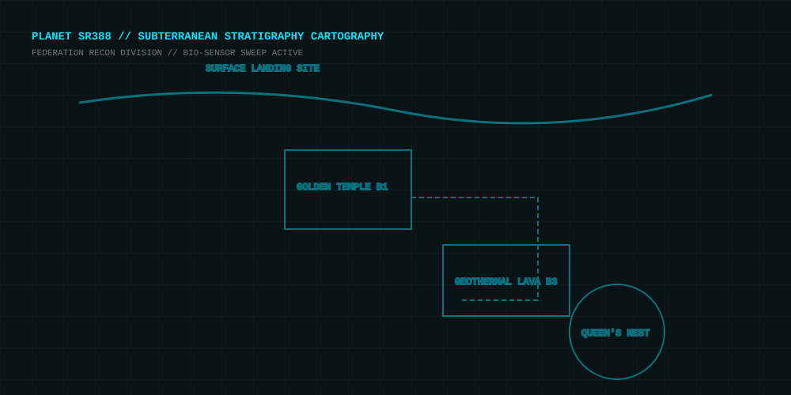

Project AM2R: Sub-Terra
1. Walkthrough & Subterranean Progression SR388 Exploration Route
- Deploying to the Surface & Securing Morph Ball Touch down at the landing site. Descend into the outer surface caverns to the right. Roll through the narrow crevice to claim the Morph Ball and Power Bomb expansion pods.
-
Neutralize the Golden Temple Alpha Metroids
Descend into the Chozo ancient ruins. Defeat the first two airborne Alpha Metroids by tracking their aerial dive attacks and firing five concussive Missiles into their soft ventral membranes.
→ [ Reveal Classified Data: Secret Energy Tank & Super Missile Route ] MAP SPOILER
Hidden Chozo Shrine Corridor: Behind the second Chozo statue, shoot the cracked sand block with two standard Missiles.
Secret Coordinates: SECTOR 01 // SUB-SHAFT 03Reward: Early Super Missile Cache + 100 HP Energy Tank.
- Trigger the Seismic Hydro-Drain Once the initial Metroid brood in Sector 1 is eradicated, seismic sensors will trigger an earthquake, draining the subterranean acid pool to expose lower access shafts.
- Recover the Varia Suit & High-Jump Boots Traverse the geothermal lava fields. Bypass heated steam chambers quickly to enter the secondary Chozo statue chamber to receive the Varia Suit thermal shielding.
-
Confront the Zeta & Omega Bio-Behemoths
Enter the subterranean breeding grounds. Evade devastating ground-pound shockwaves and deploy charged Ice Beam barrages to freeze outer carapaces before delivering Super Missile payloads.
→ [ Reveal Classified Data: Omega Metroid Vulnerability Stun-Lock ] TACTICAL COMBAT SPOILER
Frame-Perfect Stun Lock: Charge your Ice Beam prior to the Omega's ground-pound roar. Jump immediately after the tremor to fire directly at its throat, canceling the flame breath and granting a 3-second opening for 4 Super Missiles.
Critical Weakpoint: EXPOSED BACK & MOUTH MEMBRANE
2. Gameplay, Snapshots & Planet SR388 Map Biomechanical Survey & Cartography
Demonstrates mid-air Spider Ball positioning, Super Missile salvo management, and frame-perfect evasion during ground shockwaves.
Planet SR388 Subterranean Survey Map
Hover over glowing markers to reveal key Chozo landmarks and Metroid nesting territories.

3. Character Models & Biological Data Bounty Hunter & Alien Species
Samus Aran
Infused with Chozo DNA and outfitted with a bio-mechanical Power Suit capable of integrating beam upgrades, high-mobility thrusters, and explosive ordnance.
The Metroid Queen
Colossal apex lifeform anchoring the SR388 ecosystem. Features an elongated neck reach, armored chitin invulnerable to standard ordnance, and acidic projectile spit.
4. System Calibration Logs Target Rig & Acoustic Optimization
Hardware Calibration: RTX 3050 (6GB Mobile) / Core i7-13620H LOCKED 144 HZ PIXEL-PERFECT
Configuration designed for high-refresh 2D platforming, eliminating input latency during wall-jumping and morph-ball bomb leaps.
| Parameter | Recommended Setting | Performance Justification & Impact |
|---|---|---|
| Display Mode & Scaling | EXCLUSIVE FULLSCREEN // 4X INTEGER | Prevents non-integer pixel shimmering and reduces DWM desktop composition input lag to near zero. |
| V-Sync & NVIDIA Reflex | FAST SYNC (NVCP) // ULTRA LOW LATENCY | Avoids tearing at 144Hz without buffering input frames; crucial for precise bomb jump chains. |
| GPU Power State (Control Panel) | PREFER MAXIMUM PERFORMANCE | Prevents mobile RTX 3050 from downclocking to low-power P-states during lightweight 2D sprite loads. |
| CPU Affinity (i7-13620H) | P-CORES ONLY (CORES 0-5) | Prevents micro-stutter by keeping GameMaker execution threads off Intel efficiency E-cores. |
Acoustic Calibration: boAt Rockerz (FxSound / Sound Blaster EQ) SUBTERRANEAN AMBIENCE PROFILE
Frequency balancing tuned for deep underground cave resonance and crystal-clear charge beam hums.
| Frequency Band | Gain Offset | Acoustic Role in Project AM2R |
|---|---|---|
| 60 Hz - 125 Hz (Sub-Bass) | +3.5 dB | Amplifies subterranean seismic rumbles, acid drainage drops, and heavy Metroid landing thuds. |
| 1 kHz - 2 kHz (Core Gameplay Mids) | +1.5 dB | Crisp articulation for Missile fire clicks, Morph ball bomb detonations, and energy pickup chime. |
| 6 kHz - 8 kHz (Upper Presence) | -2.0 dB | Smooths high-pitched screeching cries of flying Gamma and Zeta Metroids during chaotic dogfights. |
| FxSound Clarity / Reverb | CLARITY 40% // REVERB 30% | Adds authentic cavernous acoustic decay while keeping audio cues distinct in the headset mix. |